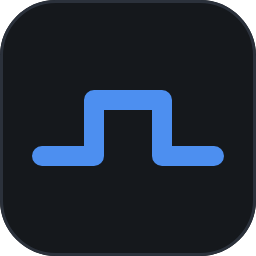

24×24 网格、1.6px 描边、圆角端点。刻意不做填充色：图标只负责形状，
颜色由主题令牌给（深色 #8a94a3 / 浅色 #66738a），换主题时整组跟着变。

应用图标是「一段方波 + 圆角深底板」：方波代表信号，底板保证在浅色任务栏上也立得住。
16px 下笔画仍有约 1.2px，不会糊成一团。
已生成：ui/resources/icons/{dark,light}/*.png（20 / 40 @2x）、
ui/resources/app.ico（16~256 七档）。